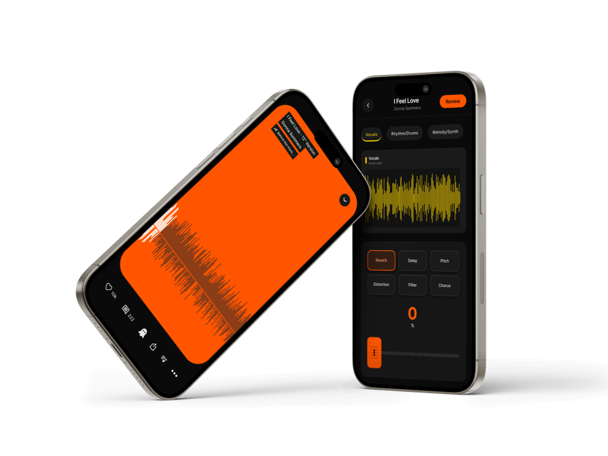
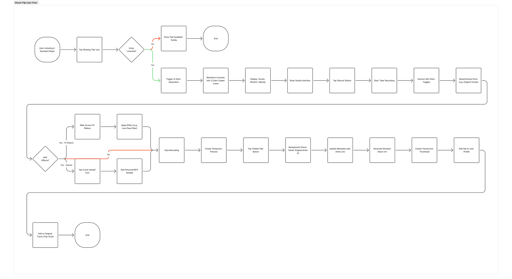
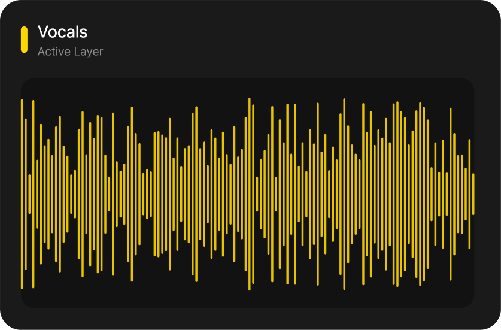
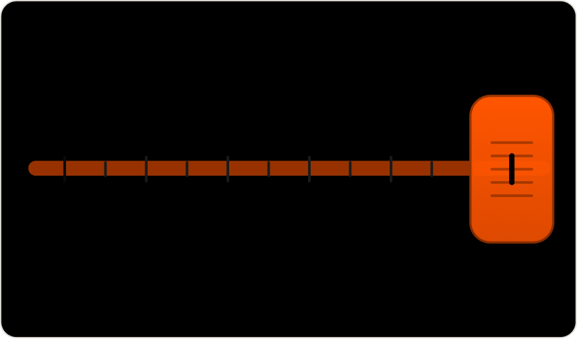
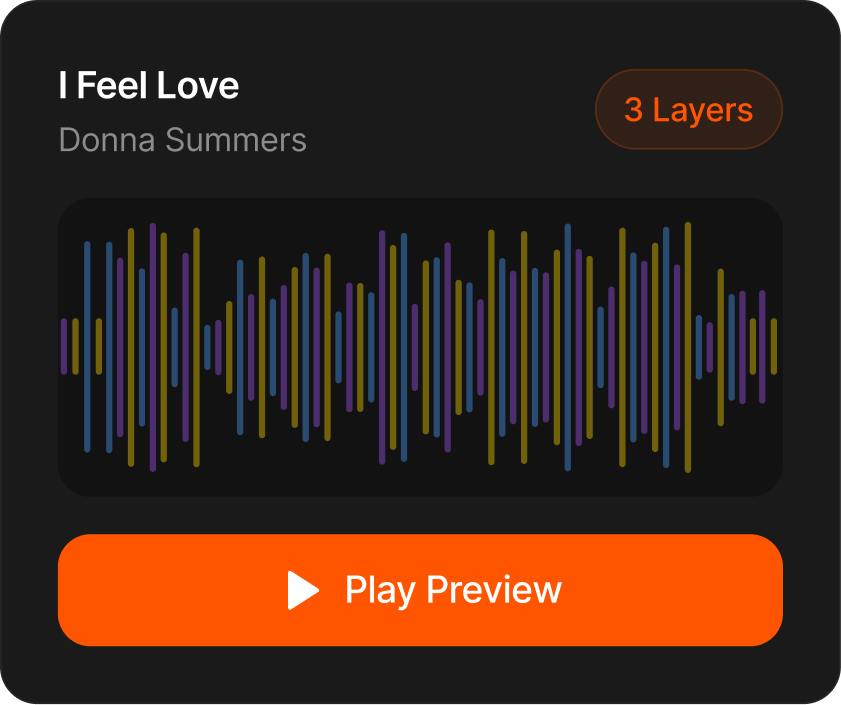
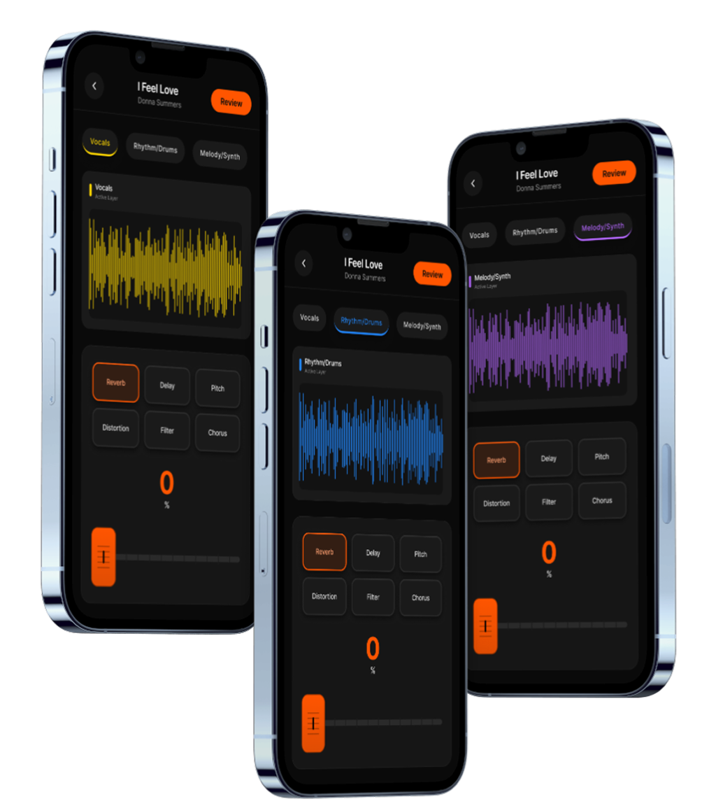
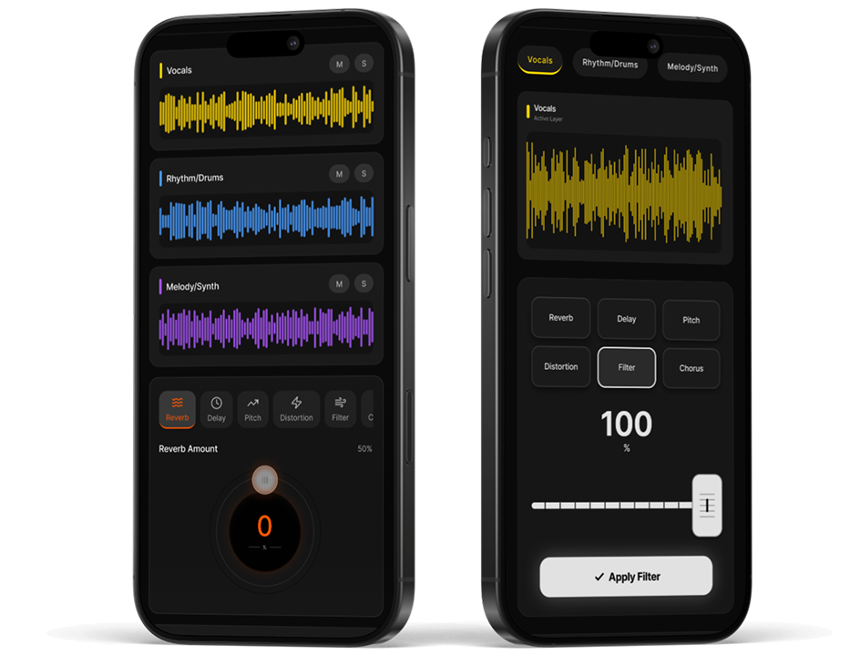
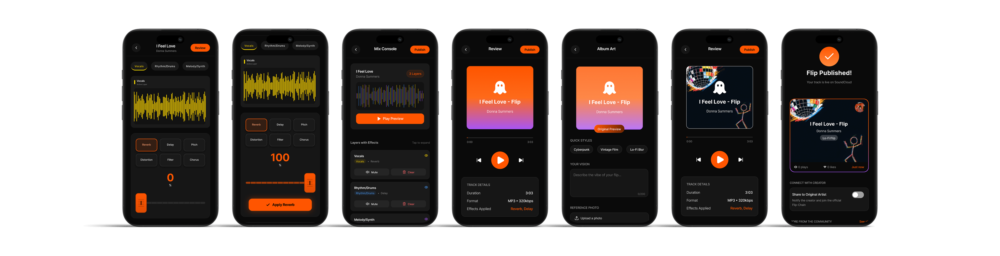

Ghost-Flip
Closing the Creator Gap.
An AI-powered mobile feature that turns passive SoundCloud listeners into remixers, without complex software.
05 Usability Tests · 60 Sec Target Flip Time

00 — Prototype Walkthrough
Prototype walkthrough – full Ghost-Flip flow from Now Playing to published flip.
01 — The Problem
The listener wants to create. The tools say no.
SoundCloud has 300M+ tracks and millions of fans who want to remix — but the jump from listener to creator is too steep. Traditional DAWs take months to learn. Copyright takedowns kill momentum. Ghost-Flip builds the bridge.
Making remixing as easy as applying a photo filter.
Ryan
The Bedroom Producer
- Makes beats on Ableton
- Follows producers on SoundCloud
- Wants to remix but fears copyright
Umi
The Casual Fan
- Listens 3+ hours a day
- Shares tracks constantly
- Never tried creating – feels intimidated
02 — User Flow
From listener to creator in 6 stages.
Every Ghost-Flip follows a six-stage journey, from the standard SoundCloud player to a published flip.
Now Playing → DAW Studio → Review → AI Album Art → Final Review → Flip Published

03 — Design Decisions
Three decisions that made remixing feel human.
Color Visuals
3-lane waveform system
Color-coded stems make isolation instant, yellow for Vocals, green for Rhythm, purple for Melody. One tap isolates any stem inside the DAW Studio.

FX Ribbon
Thumb-friendly sliders
Layer your effects, then dial it in at the Mix Console. A horizontal orange slider at the bottom of the DAW screen gives users a physical, tactile way to blend stems in real time.

Mix Console
Full control, zero overwhelm
Per-stem effect control that feels like a real mixing board — condensed for your thumb, without losing the power.

04 — Design Evolution
One stem at a time. Total focus.
Each stem gets its own focused view — Vocals, Rhythm, and Melody isolated one at a time. No information overload, no competing waveforms. Just the track you're working on and the controls you need.
Warm yellow. The human voice is warm, personal, familiar.
Cool blue. Rhythm is mechanical, steady, reliable.
Purple. The middle ground — emotional but structured.
For someone learning to remix for the first time, color does the teaching before the controls do.

05 — Testing
5 users. One goal.
I ran usability tests to see if users could complete a full Ghost-Flip without friction. The biggest finding was in the FX controls, the original circular dial was too fiddly on mobile. Users instinctively wanted to drag, not rotate. That insight directly drove the switch to the horizontal slider.
FX Slider — Users instinctively dragged without any instruction needed.
Circular dial — Removed. Too fiddly on mobile, replaced with horizontal slider.
From this → To this

06 — Final Screens
The finished flow.

07 — Outcome
From listener to creator in under a minute. Ghost-Flip strips away every barrier that ever made remixing feel out of reach.
Ghost-Flip makes remixing feel like the easiest thing in the world. Isolate stems, play with effects, generate your cover art — all without ever leaving your phone. The final prototype proved that music tech UI has to be as expressive as the sound itself.
08 — Reflection
What I'd do differently.
What Worked
The stem isolation mechanic landed immediately — users felt like they were inside the track. The Ghost-Credit system gave users a sense of legal safety without adding any friction to the flow.
What I'd Change
I'd invest more time in the AI Album Art generator — it was the most delightful moment in testing but the least developed part of the design. That screen has the most potential to make Ghost-Flip feel like a creative tool, not just a remixing utility.